Source: AVEVA Operations Management Interface 2023 Training Manual, Module 12 — .NET Controls
Covers importing the SQL Data Grid .NET control as an OMI App, creating a layout with a dynamic SQL query, and associating it with Plant navigation to display historical data. (pages 673–684)
Lab Introduction:
In this lab, you will import the SQL Data Grid control into your Galaxy as an App for your ViewApp. You will add the SQL Data Grid control to a layout and configure it to query historical data based on the asset that the ViewApp navigates to. Then you will associate the new layout with the Plant navigation item and add it to the tabbed pane in the Main layout.
Before you import an external control into your Galaxy as an App, you need to assemble the control and all required files into a single folder. The SQL Data Grid control consists of multiple DLL files, including Infragistics UI components that the grid depends on.
Step 1. In File Explorer, expand This PC and navigate to:
The source folder containing the SQL Data Grid control files. All six DLLs — including aaDCM.dll, Infragistics2.Shared.v7.1.dll, Infragistics2.Win.Misc.v7.1.dll, Infragistics2.Win.UltraWinGrid.v7.1.dll, Infragistics2.Win.v7.1.dll, and SQLDataGridUserCtrl.dll — are selected with the Copy option highlighted in the right-click context menu.
Step 2. Select all files in the folder, right-click, and then select Copy.
Step 3. In File Explorer, navigate to C:\Training.
Step 4. Create a folder for the control files, and name it SQLDataGridApp.
Step 5. Open the SQLDataGridApp folder and paste the copied files into it.
Step 6. Close File Explorer.
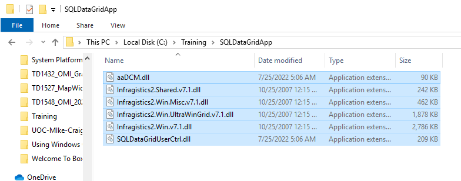
The target folder C:\Training\SQLDataGridApp with all six DLL files successfully copied. The folder now contains the complete set of files needed for the SQL Data Grid control import.
Now you will import the assembled SQL Data Grid control into your Galaxy as an OMI App. This process registers the control so it can be used within layouts.
Note: Ensure that your preview session and the ViewApp Editor are closed before you start the import process.
Step 7. In the System Platform IDE, on the Galaxy menu, select Import → Visualization → OMI App.
The System Platform IDE Import screen with the Visualization section expanded. The OMI App option is visible, described as "Import OMI apps and .NET controls for use on layouts in OMI." Other options include Client controls, Web Widgets, Style Libraries, and Script Library.
The Import OMI App dialog box appears.
Step 8. Navigate to C:\Training, select the SQLDataGridApp folder, and then click Select Folder.
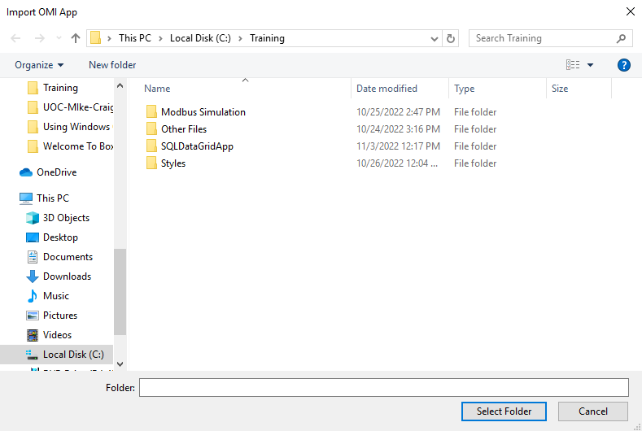
The Import OMI App folder selection dialog showing the contents of C:\Training. The SQLDataGridApp folder is visible alongside other folders: Modbus Simulation, Other Files, and Styles.
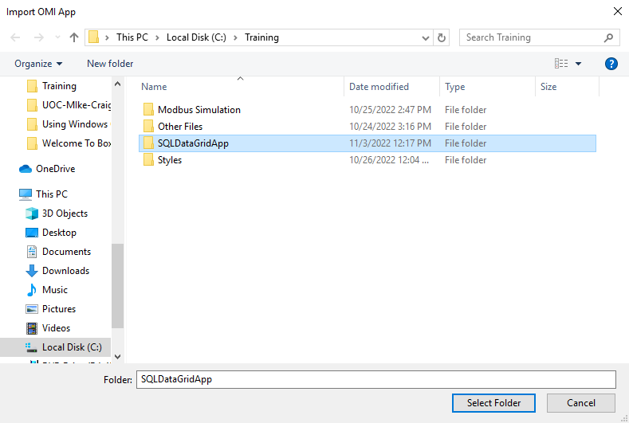
The SQLDataGridApp folder selected (highlighted in blue) with the Select Folder button now active, ready to proceed with the import.
The Import OMI App progress dialog box appears.
Step 9. When the Import is complete message appears, click Close.
Note: Inform your instructor if errors or warnings appear for the import process.
Step 10. Return to the main page of the System Platform IDE. The SQLDataGridApp001 App is added at the bottom of the Graphics tab.
Step 11. On the Graphics tab, rename the imported App to SQLDataGridApp, and then move it to the Apps toolset.
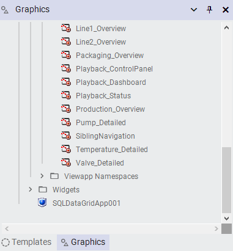
The Graphics tab after import. The SQLDataGridApp001 appears at the bottom of the list with a blue app icon, awaiting renaming and reorganization.
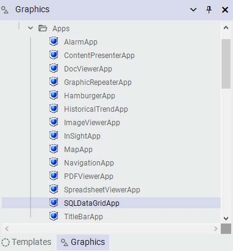
After renaming and moving, the SQLDataGridApp is now properly organized within the Apps folder alongside other applications: AlarmApp, ContentPresenterApp, DocViewerApp, GraphicRepeaterApp, HamburgerApp, HistoricalTrendApp, ImageViewerApp, InSightApp, MapApp, NavigationApp, PDFViewerApp, SpreadsheetViewerApp, and TitleBarApp.
49.3 Create a Layout for the Control
Reference: Module 12, Lab 24 — Create a Layout for the Control (pages 678–680)
In the following steps, you will create a new layout named HistoricalDataGrid and assign the SQL Data Grid control to it. You will also configure a SQL query for the control that dynamically retrieves historical data for the currently selected asset.
Step 12. In the Training \ Layouts toolset, create a new layout and name it HistoricalDataGrid.
Step 13. Double-click HistoricalDataGrid to open it in the Layout Editor.
Step 14. On the Toolbox tab, enter a search string to find SQLDataGridUserCtrl and drag the control to Pane1.
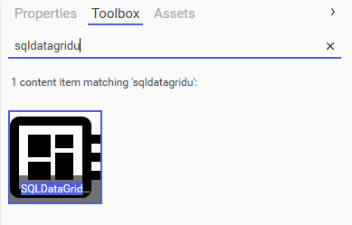
The Toolbox tab with the search term "sqldatagridu" entered. A single matching result — the SQLDataGridUserCtrl control icon — is displayed, ready to be dragged into the layout pane.
It may take a moment for all of the properties for this control to load.
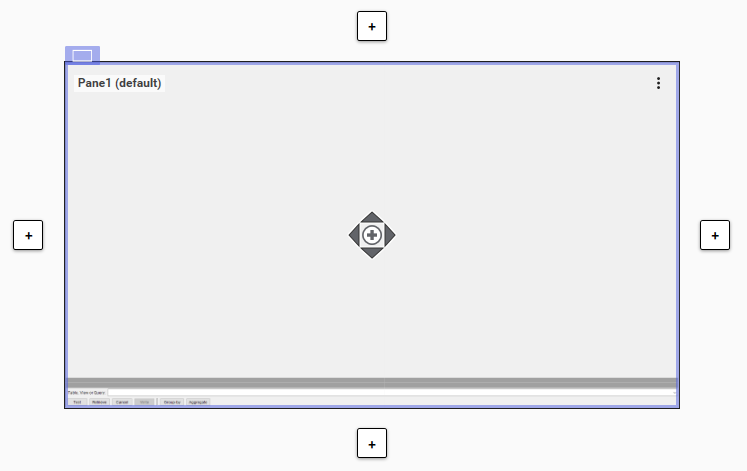
The Layout Editor with Pane1 (default) showing the SQL Data Grid control placeholder. The blue "+" buttons on all four edges allow splitting the pane into additional sections.
Step 15. On the Properties tab, for the SQL → SQLQuery property, click the down-arrow to the left of the field and select In.
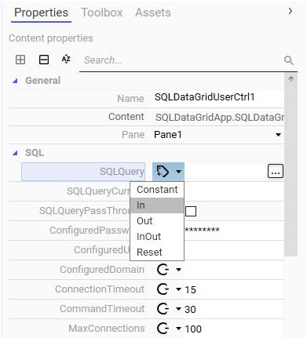
The Properties tab for the SQLDataGridUserCtrl control. The SQLQuery property dropdown is open, showing the In option selected. This parameter direction allows a dynamic query string to be passed at runtime.
Step 16. Enter the following for the SQL → SQL Query property reference:
"Select * from History where Tagname like '" + MyViewApp.Navigation.CurrentAsset + "%'"
Important: Please pay close attention to the syntax of the SQL statement. Make sure you have a single quotation mark followed by a double quotation mark after like and %.
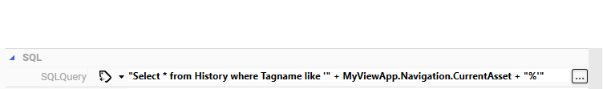
The SQLQuery property configured with the dynamic SQL statement. The query selects all columns from the History table where the Tagname matches the current navigation asset with a wildcard — allowing the grid to display data relevant to whichever equipment the operator is viewing.
Step 17. Configure the following properties:
Note: Your instructor will provide the Historian node name. The example below uses S00ENG as the Historian node name.
Property
Value
Misc → ConfiguredDatabase
Runtime
Misc → ConfiguredServer
<Historian node name>
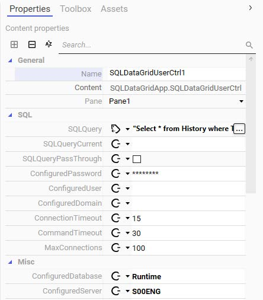
The Properties pane showing the complete SQL Data Grid configuration. The ConfiguredDatabase is set to "Runtime" and the ConfiguredServer is set to the Historian node (S00ENG in this example). Other settings include ConnectionTimeout of 15 seconds and CommandTimeout of 30 seconds.
Step 18. Save and close the HistoricalDataGrid layout, and check it in.
49.4 Associate HistoricalDataGrid with a Navigation Item
Now you will link the HistoricalDataGrid layout to the Plant navigation item in the ViewApp Editor, making the grid available as a tab in the tabbed pane.
Step 19. On the Templates tab, in the Training \ ViewApps toolset, double-click $ViewApp_Training to open it in the ViewApp Editor.
Step 20. In the Navigation list, select Plant.
Step 21. On the Toolbox tab, enter a search string to find the HistoricalDataGrid layout, and drag it to Pane8, which is the tabbed pane.
You can review the Actions list to confirm the assignment.
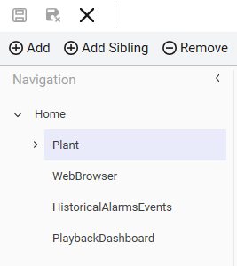
The ViewApp Editor Navigation panel showing the hierarchy: Home → Plant (highlighted as selected, shown in purple). Plant contains WebBrowser, HistoricalAlarmsEvents, and PlaybackDashboard items. The HistoricalDataGrid layout will be assigned to Plant's Pane8.
Step 22. Click Preview to open a preview session, and then navigate to Plant.
Note: When the preview opens, you will be logged in as <domain>student. You do not need to switch to another user.
In the bottom-left pane, notice that the HistoricalDataGrid tab displays as the third tab.
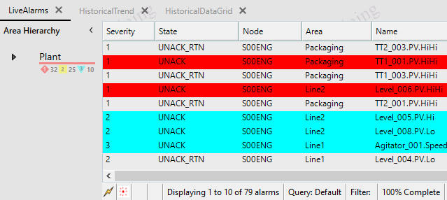
The ViewApp preview session with the LiveAlarms tab active, showing color-coded alarm data. The HistoricalDataGrid tab is now visible as the third tab in the bottom-left pane, confirming the layout was successfully assigned to the Plant navigation item.
49.5 Test the ViewApp in a Preview Session
Reference: Module 12, Lab 24 — Test the ViewApp (pages 682–684)
Now you will verify that the SQL Data Grid control connects to the database and retrieves historical data for each asset you navigate to.
Step 23. Click the HistoricalDataGrid tab. The SQLDataGridUserCtrl appears.
Notice some buttons are included at the bottom of the control, such as Test, Retrieve, Cancel, and others.
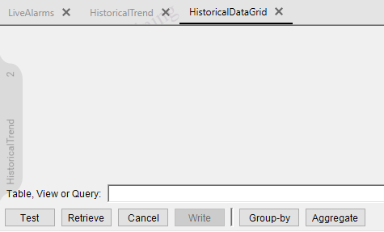
The HistoricalDataGrid tab with the SQL Data Grid control loaded. The grid area is currently empty. The bottom toolbar includes Test, Retrieve, Cancel, Write, Group-by, and Aggregate buttons for interacting with the data.
Step 24. Click Test and notice an initial error message.
The error message occurs because the SQLDataGridCtrl control must be loaded and then refreshed to make a successful connection to the database.
Step 25. Close the HistoricalDataGrid tab.
Step 26. Navigate the ViewApp to Plant to reload content.
Step 27. Click the HistoricalDataGrid tab.
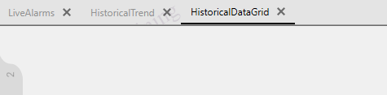
The tab bar showing all three available tabs — LiveAlarms, HistoricalTrend, and HistoricalDataGrid — after reloading the Plant navigation.
Step 28. On the HistoricalDataGrid tab, click Test.
A Connection Succeeded message displays in the grid area.
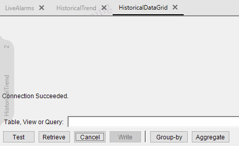
After clicking Test, the status message "Connection Succeeded." appears in the grid area, confirming the control has successfully connected to the Historian database.
Step 29. Click Retrieve.
Notice that columns display at the top of the grid area. There are no records in the grid because the SQL statement is querying data for the current asset. Plant does not have history data stored in the database, so there are no records to display for the current navigation.
Step 30. Navigate the ViewApp to Plant → Production Lines → Line 1 → Mixer100.
Step 31. Click the HistoricalDataGrid tab.
Step 32. Click Retrieve.
Notice that records are displayed in the grid. By default, the query retrieves 1 hour of records. You can scroll down to view the records if needed. The historical data records are for tag names that include the current asset, which is Mixer100.
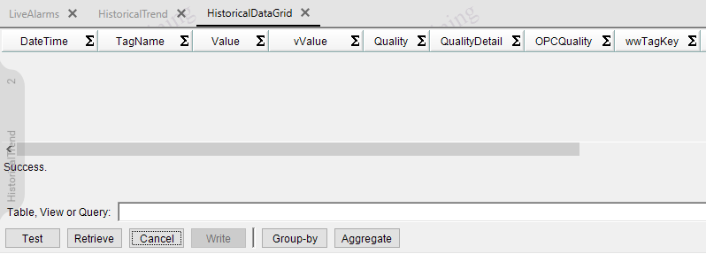
The HistoricalDataGrid displaying historical data for Mixer100. The grid shows columns for DateTime, TagName, Value, vValue, Quality, QualityDetail, OPCQuality, and wwTagKey — populated with actual recorded data points from the Historian database.
Step 33. Repeat Steps 30–32 to test some other assets. For example, you can navigate to:
Agitator_001
Level_001
Temperature_001
Mixer200
Step 34. When you are finished testing, minimize the preview session and the ViewApp Editor.
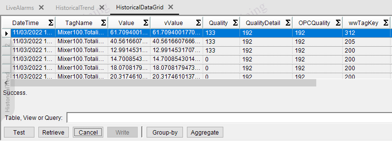
The HistoricalDataGrid fully populated with Mixer100 data after clicking Retrieve. The grid displays timestamped values, quality codes, and OPC quality indicators. The vertical scrollbar confirms more records are available than can be displayed on one screen.
<End of Lab>
Lab Summary
What You Accomplished:
Assembled the SQL Data Grid control DLL files into the SQLDataGridApp folder
Imported the .NET control into the Galaxy as an OMI App
Created the HistoricalDataGrid layout and assigned the control to Pane1
Configured a dynamic SQL query that retrieves historical data based on the current navigation asset
Set the ConfiguredDatabase and ConfiguredServer properties to connect to the Historian
Associated the layout with the Plant navigation item in the ViewApp Editor
Tested the control in a preview session — verified Connection Succeeded and data retrieval for Mixer100 and other assets
📝 Knowledge Check
Q1: Why do you need to assemble the DLL files into a single folder before importing?
The SQL Data Grid control depends on multiple DLL files (Infragistics UI libraries, aaDCM.dll, etc.). All dependencies must be in the same folder so the import process can register them together as a single OMI App.
Q2: What does the SQLQuery property value "Select * from History where Tagname like '" + MyViewApp.Navigation.CurrentAsset + "%'" do?
It creates a dynamic SQL query that selects all columns from the History table where the Tagname starts with the name of the asset currently selected in the ViewApp navigation. This makes the grid context-sensitive — it automatically shows data for whichever equipment the operator is viewing.
Q3: Why does clicking Test initially show an error before the control works?
The SQLDataGrid control must first be loaded into memory and then refreshed to establish a successful database connection. After the initial load, closing and re-opening the tab triggers the refresh needed for a successful connection.
Q4: What is the significance of setting SQLQuery to "In" parameter direction?
Setting the SQLQuery property direction to "In" means the query string is treated as an input parameter that can be dynamically constructed at runtime using the ViewApp namespace reference. This allows the query to use the CurrentAsset variable to build a context-sensitive SQL statement.
Q5: Why does the Plant navigation item show no records while Mixer100 shows records?
The SQL query filters by Tagname matching the current asset name. "Plant" is a container node with no direct historical data — it has no tags recording to the Historian. Mixer100 is an actual equipment asset with sensor tags (like Mixer100.Totalli...) that record data, so it has historical records to display.
Source: AVEVA Operations Management Interface 2023 Training Manual, Module 12 — .NET Controls, Lab 24